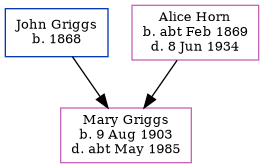

Helen Maud Theobald (née Griggs) 1902 - 1983
[ Home ] | [ Calendar ] | [ Surnames Index ] | [ Census Index ] | [ Family History ]The 6th of 8 children of John Griggs (a general laborer) and Alice Horn, Helen Griggs, the second cousin twice-removed on the father's side of Nigel Horne, was born in Margate, Kent, England on Apr 7, 1902 and baptized there at St John the Baptist's Church on Jul 30, 1902. She married Charles Theobald in Thanet, Kent, England around Nov 19251. On Apr 2, 1911, she was living at Milton Road in Margate2.
She died in 1983.
Parents
- John Edward was born in 1868
- Alice Clara was born c. Feb 1869
Citations
- England & Wales Marriages 1837-2005 - Findmypast
- 1911 Census for England & Wales - Findmypast (was age 8 and the daughter of the head of the household)
Media
England & Wales marriages 1837-2005 - BMD/M/1925/4/AZ/000454/014
England & Wales births 1837-2006 - BMD/B/1902/2/AZ/000247/280
1911 Census for England & Wales - GBC/1911/RG14/04491/0387/5
England Births & Baptisms 1538-1975 - R_884645599
Family Tree
Generated by ged2site. Last updated on Jun 11, 2024